Spring Security & LDAP
完整程式碼：https://github.com/aweit-zhu/SpringSecurityLdap
LDAP
LDAP (Lightweight Directory Access Protocol, 輕型目錄存取協定)，除了有 Windows 的 AD(Active Directory)外，還有開源的 OpenLDAP。
OpenLDAP 可以透過瀏覽器直接管理 (phpLDAPadmin )。
1.docker-compose.yaml
services:
openldap:
image: osixia/openldap
environment:
- LDAP_ORGANISATION=Example Inc.
- LDAP_DOMAIN=example.com
- LDAP_ADMIN_PASSWORD=admin
ports:
- 389:389
volumes:
- ./data/ldap:/var/lib/ldap
- ./data/slapd:/etc/ldap/slapd.d
phpldapadmin:
image: osixia/phpldapadmin
environment:
- PHPLDAPADMIN_LDAP_HOSTS=openldap
- PHPLDAPADMIN_HTTPS=false
ports:
- 8080:80
depends_on:
- openldap
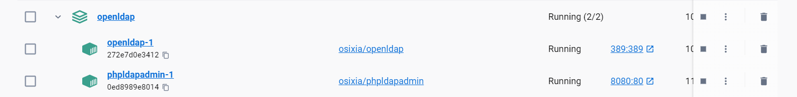
網址：http://localhost:8080/ 帳號：cn=admin,dc=example,dc=com 密碼：admin 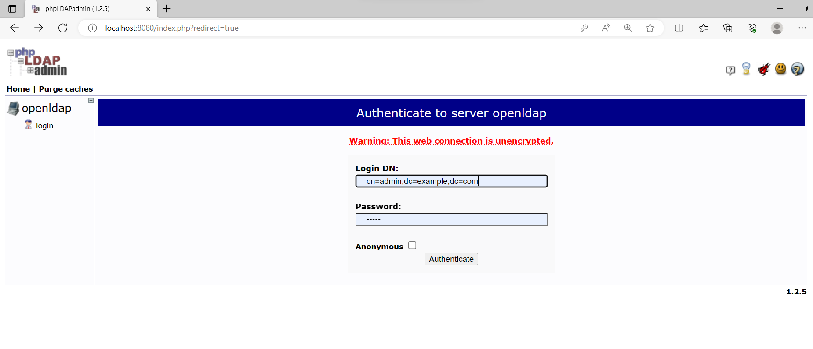
- 建立 OU (Organisational Unit)：groups、users。
點選 Organisational Unit

輸入 users 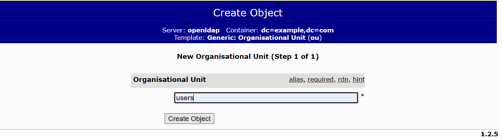
接著重複動作，建立 users。
- 建立 Generic: Posix Group：admin、user
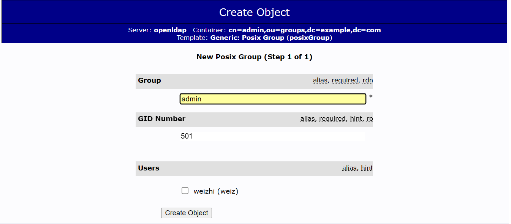
- 在 ou=groups上，建立兩個角色：admin、user

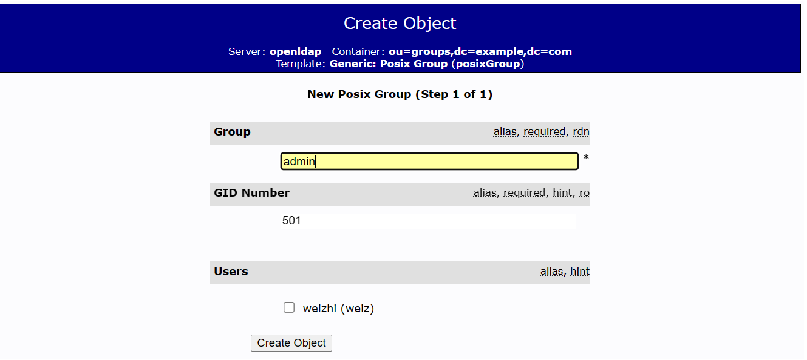
- 在 ou-users上，建立 Generic: User Account：weizhi
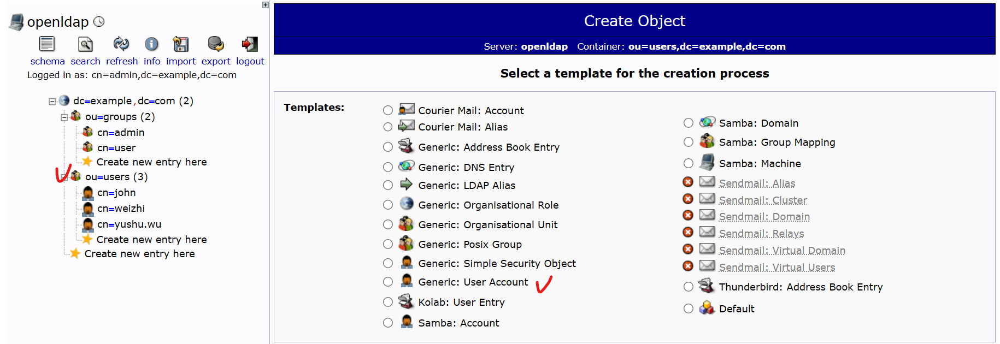
GID Number = Group ID 號碼，就是剛剛建立的 admin 和 user 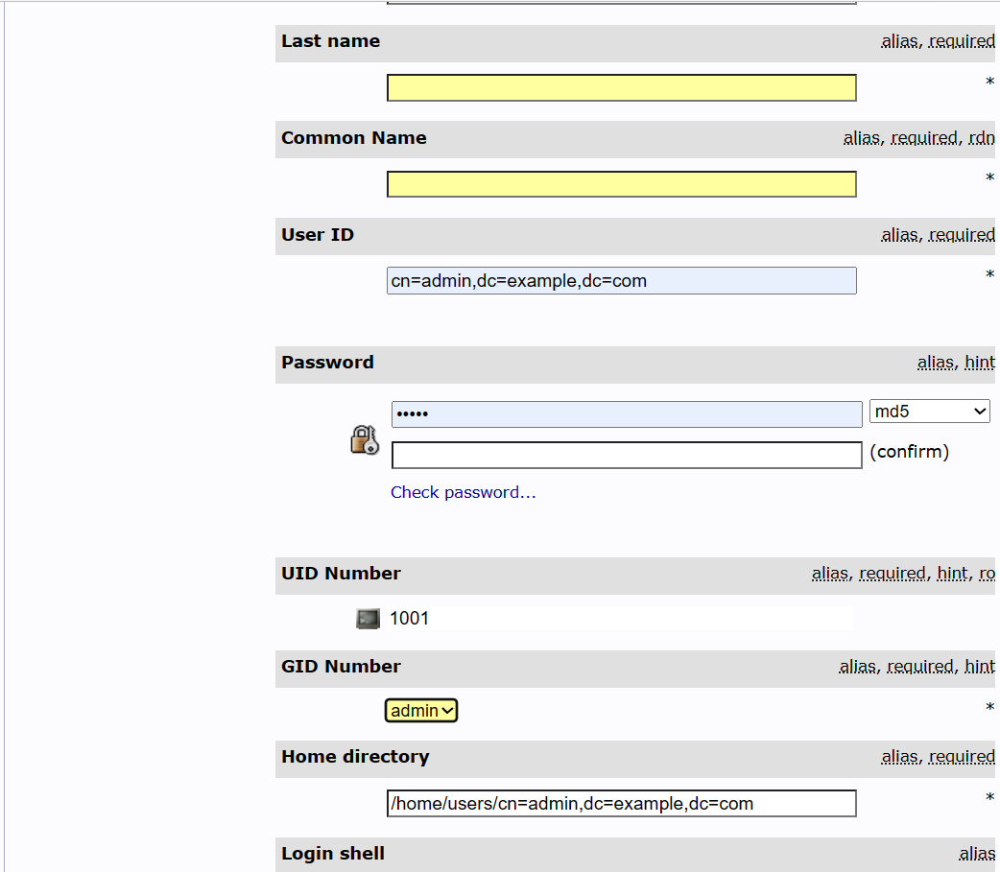
- 綁定 User Account 至 Posix Group 中，要用 DN 新增。
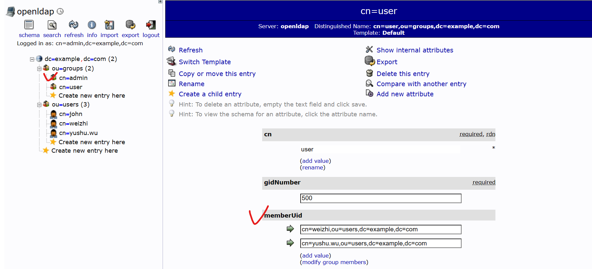
Spring Security and LDAP
建立具有認證與授權的Controller，其中 /admin 的路徑需要有 ADMIN 權限、/user 的路徑需要有 USER 權限。
使用 Spring Security 的機制，但 User 的整合(帳號、密碼、授權) 需要由 LDAP提供。
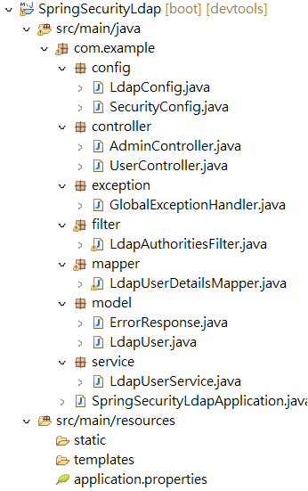
- pom.xml
<project xmlns="http://maven.apache.org/POM/4.0.0"
xmlns:xsi="http://www.w3.org/2001/XMLSchema-instance"
xsi:schemaLocation="http://maven.apache.org/POM/4.0.0 https://maven.apache.org/xsd/maven-4.0.0.xsd">
<modelVersion>4.0.0</modelVersion>
<parent>
<groupId>org.springframework.boot</groupId>
<artifactId>spring-boot-starter-parent</artifactId>
<version>2.6.15</version>
<relativePath /> <!-- lookup parent from repository -->
</parent>
<groupId>com.example</groupId>
<artifactId>SpringSecurityLdap</artifactId>
<version>0.0.1-SNAPSHOT</version>
<name>SpringSecurityLdap</name>
<description>Demo project for Spring Boot</description>
<properties>
<java.version>17</java.version>
</properties>
<dependencies>
<dependency>
<groupId>org.springframework.boot</groupId>
<artifactId>spring-boot-starter-web</artifactId>
</dependency>
<!-- Spring Security -->
<dependency>
<groupId>org.springframework.boot</groupId>
<artifactId>spring-boot-starter-security</artifactId>
</dependency>
<!-- Spring LDAP -->
<dependency>
<groupId>org.springframework.boot</groupId>
<artifactId>spring-boot-starter-data-ldap</artifactId>
</dependency>
<dependency>
<groupId>org.springframework.security</groupId>
<artifactId>spring-security-ldap</artifactId>
</dependency>
<dependency>
<groupId>org.springframework.boot</groupId>
<artifactId>spring-boot-devtools</artifactId>
<scope>runtime</scope>
<optional>true</optional>
</dependency>
<dependency>
<groupId>org.projectlombok</groupId>
<artifactId>lombok</artifactId>
<optional>true</optional>
</dependency>
<dependency>
<groupId>org.springframework.boot</groupId>
<artifactId>spring-boot-starter-test</artifactId>
<scope>test</scope>
</dependency>
<dependency>
<groupId>org.springframework.security</groupId>
<artifactId>spring-security-test</artifactId>
<scope>test</scope>
</dependency>
</dependencies>
<build>
<plugins>
<plugin>
<groupId>org.springframework.boot</groupId>
<artifactId>spring-boot-maven-plugin</artifactId>
<configuration>
<excludes>
<exclude>
<groupId>org.projectlombok</groupId>
<artifactId>lombok</artifactId>
</exclude>
</excludes>
</configuration>
</plugin>
</plugins>
</build>
</project>
- application.properties
ldap.url=ldap://localhost:389
ldap.username=cn=admin,dc=example,dc=com
ldap.password=admin
ldap.baseDn=dc=example,dc=com
server.port=8091
- LdapConfig.java
import org.springframework.beans.factory.annotation.Value;
import org.springframework.context.annotation.Bean;
import org.springframework.context.annotation.Configuration;
import org.springframework.ldap.core.LdapTemplate;
import org.springframework.ldap.core.support.LdapContextSource;
@Configuration
public class LdapConfig {
@Value("${ldap.url}")
private String ldapUrl;
@Value("${ldap.username}")
private String ldapUsername;
@Value("${ldap.password}")
private String ldapPassword;
@Bean
public LdapContextSource ldapContextSource() {
LdapContextSource ldapContextSource = new LdapContextSource();
ldapContextSource.setUrl(ldapUrl);
ldapContextSource.setUserDn(ldapUsername);
ldapContextSource.setPassword(ldapPassword);
return ldapContextSource;
}
@Bean
public LdapTemplate ldapTemplate() {
return new LdapTemplate(ldapContextSource());
}
}
- SecurityConfig.java
import org.springframework.beans.factory.annotation.Autowired;
import org.springframework.context.annotation.Bean;
import org.springframework.context.annotation.Configuration;
import org.springframework.ldap.core.LdapTemplate;
import org.springframework.ldap.core.support.LdapContextSource;
import org.springframework.security.authentication.AuthenticationProvider;
import org.springframework.security.config.annotation.authentication.builders.AuthenticationManagerBuilder;
import org.springframework.security.config.annotation.web.builders.HttpSecurity;
import org.springframework.security.config.annotation.web.configuration.WebSecurityConfigurerAdapter;
import org.springframework.security.crypto.bcrypt.BCryptPasswordEncoder;
import org.springframework.security.crypto.password.PasswordEncoder;
import org.springframework.security.ldap.authentication.BindAuthenticator;
import org.springframework.security.ldap.authentication.LdapAuthenticationProvider;
import org.springframework.security.ldap.authentication.LdapAuthenticator;
import org.springframework.security.ldap.search.FilterBasedLdapUserSearch;
import org.springframework.security.ldap.search.LdapUserSearch;
import org.springframework.security.ldap.userdetails.DefaultLdapAuthoritiesPopulator;
import org.springframework.security.ldap.userdetails.LdapAuthoritiesPopulator;
import org.springframework.security.web.authentication.www.BasicAuthenticationFilter;
import com.example.filter.LdapAuthoritiesFilter;
import com.example.mapper.LdapUserDetailsMapper;
@Configuration
public class SecurityConfig extends WebSecurityConfigurerAdapter {
@Autowired
LdapContextSource ldapContextSource;
@Autowired
LdapTemplate ldapTemplate;
@Autowired
LdapAuthoritiesFilter ldapAuthoriesFilter;
@Override
protected void configure(AuthenticationManagerBuilder auth) throws Exception {
auth.authenticationProvider(ldapAuthenticationProvider());
}
@Bean
public AuthenticationProvider ldapAuthenticationProvider() {
LdapAuthenticationProvider ldapAuthenticationProvider = new LdapAuthenticationProvider(ldapBindAuthenticator(),
ldapAuthoritiesPopulator());
ldapAuthenticationProvider.setUserDetailsContextMapper(new LdapUserDetailsMapper());
return ldapAuthenticationProvider;
}
@Bean
public LdapAuthenticator ldapBindAuthenticator() {
BindAuthenticator bindAuthenticator = new BindAuthenticator(ldapContextSource);
bindAuthenticator.setUserSearch(ldapUserSearch());
return bindAuthenticator;
}
@Bean
public LdapAuthoritiesPopulator ldapAuthoritiesPopulator() {
DefaultLdapAuthoritiesPopulator authoritiesPopulator = new DefaultLdapAuthoritiesPopulator(ldapContextSource,
"ou=groups,dc=example,dc=com");
authoritiesPopulator.setGroupSearchFilter("memberUid={0}");
return authoritiesPopulator;
}
@Bean
public LdapUserSearch ldapUserSearch() {
return new FilterBasedLdapUserSearch("ou=users,dc=example,dc=com", "(uid={0})", ldapContextSource);
}
@Override
protected void configure(HttpSecurity http) throws Exception {
http.
addFilterBefore(ldapAuthoriesFilter,BasicAuthenticationFilter.class).authorizeRequests()
.antMatchers("/admin/**").hasAnyRole("ADMIN")
.antMatchers("/user/**").hasAnyRole("ADMIN", "USER")
.anyRequest().authenticated()
.and()
.csrf().ignoringAntMatchers("/admin/user")
.and()
.formLogin()
.and()
.logout();
}
@Bean
public PasswordEncoder passwordEncoder() {
return new BCryptPasswordEncoder();
}
}
}
4.LdapUserDetailsMapper.java
import java.nio.charset.StandardCharsets;
import java.util.Collection;
import org.springframework.ldap.core.DirContextAdapter;
import org.springframework.ldap.core.DirContextOperations;
import org.springframework.security.core.GrantedAuthority;
import org.springframework.security.core.userdetails.User;
import org.springframework.security.core.userdetails.UserDetails;
import org.springframework.security.ldap.userdetails.UserDetailsContextMapper;
public class LdapUserDetailsMapper implements UserDetailsContextMapper {
@Override
public UserDetails mapUserFromContext(DirContextOperations ctx, String username, Collection<? extends GrantedAuthority> authorities) {
String ldapUsername = ctx.getStringAttribute("uid");
byte[] binaryData = (byte[]) ctx.getObjectAttribute("userPassword");
String ldapPassword = new String(binaryData, StandardCharsets.UTF_8);
return User.builder()
.username(ldapUsername)
.password(ldapPassword)
.authorities(authorities)
.build();
}
@Override
public void mapUserToContext(UserDetails user, DirContextAdapter ctx) {
// Not implemented as this is not needed for authentication
}
}
5.LdapAuthoritiesFilter.java
import java.io.IOException;
import java.util.Collection;
import java.util.HashSet;
import java.util.Set;
import javax.naming.NamingException;
import javax.naming.directory.Attributes;
import javax.naming.directory.SearchControls;
import javax.servlet.FilterChain;
import javax.servlet.ServletException;
import javax.servlet.http.HttpServletRequest;
import javax.servlet.http.HttpServletResponse;
import org.springframework.beans.factory.annotation.Autowired;
import org.springframework.ldap.core.ContextMapper;
import org.springframework.ldap.core.DirContextOperations;
import org.springframework.ldap.core.LdapTemplate;
import org.springframework.security.authentication.UsernamePasswordAuthenticationToken;
import org.springframework.security.core.Authentication;
import org.springframework.security.core.GrantedAuthority;
import org.springframework.security.core.authority.SimpleGrantedAuthority;
import org.springframework.security.core.context.SecurityContextHolder;
import org.springframework.security.core.userdetails.User;
import org.springframework.security.web.authentication.WebAuthenticationDetailsSource;
import org.springframework.stereotype.Component;
import org.springframework.web.filter.OncePerRequestFilter;
@Component
public class LdapAuthoritiesFilter extends OncePerRequestFilter {
@Autowired
LdapTemplate ldapTemplate;
@Override
protected void doFilterInternal(HttpServletRequest request, HttpServletResponse response, FilterChain filterChain)
throws ServletException, IOException {
Authentication authentication = SecurityContextHolder.getContext().getAuthentication();
if (authentication != null && authentication.isAuthenticated()
&& authentication instanceof UsernamePasswordAuthenticationToken) {
UsernamePasswordAuthenticationToken usernamePasswordAuthenticationToken = (UsernamePasswordAuthenticationToken) authentication;
if (usernamePasswordAuthenticationToken.getPrincipal() instanceof User) {
User ldapUserDetails = (User) usernamePasswordAuthenticationToken.getPrincipal();
UsernamePasswordAuthenticationToken updatedAuthentication = new UsernamePasswordAuthenticationToken(
ldapUserDetails, ldapUserDetails.getPassword(),
retrieveLdapAuthorities(ldapUserDetails.getUsername()));
updatedAuthentication.setDetails(new WebAuthenticationDetailsSource().buildDetails(request));
SecurityContextHolder.getContext().setAuthentication(updatedAuthentication);
}
}
// Proceed with the filter chain
filterChain.doFilter(request, response);
}
private Collection<? extends GrantedAuthority> retrieveLdapAuthorities(String username) {
// Define the LDAP search filter to retrieve the authorities for the user
String filter = "(memberUid=cn=" + username + ",ou=users,dc=example,dc=com)";
// Set the search controls to limit the attributes returned
SearchControls searchControls = new SearchControls();
searchControls.setSearchScope(SearchControls.SUBTREE_SCOPE);
searchControls.setReturningAttributes(new String[] { "cn" });
// Perform the LDAP search and retrieve the authorities
Set<GrantedAuthority> authorities = new HashSet<>();
ldapTemplate.search("ou=groups,dc=example,dc=com", filter, searchControls, (ContextMapper<Void>) ctx -> {
Attributes attributes = ((DirContextOperations) ctx).getAttributes();
try {
javax.naming.directory.Attribute memberOfAttribute = attributes.get("cn");
if (memberOfAttribute != null) {
for (int i = 0; i < memberOfAttribute.size(); i++) {
String authority = (String) memberOfAttribute.get(i);
authorities.add(new SimpleGrantedAuthority("ROLE_" + authority.toUpperCase()));
}
}
} catch (NamingException e) {
e.printStackTrace();
}
return null;
});
return authorities;
}
}
- 建立 Controller：Admin、Controller
import java.security.NoSuchAlgorithmException;
import org.springframework.beans.factory.annotation.Autowired;
import org.springframework.web.bind.annotation.GetMapping;
import org.springframework.web.bind.annotation.PostMapping;
import org.springframework.web.bind.annotation.RequestBody;
import org.springframework.web.bind.annotation.RequestMapping;
import org.springframework.web.bind.annotation.RestController;
import com.example.model.LdapUser;
import com.example.service.LdapUserService;
@RestController
@RequestMapping("/admin")
public class AdminController {
@Autowired
LdapUserService ldapUserService;
@GetMapping("")
public String admin() {
return "admin is here";
}
@PostMapping("/user")
public void createUser(@RequestBody LdapUser user) throws NoSuchAlgorithmException {
ldapUserService.createUser(user);
}
}
import org.springframework.web.bind.annotation.GetMapping;
import org.springframework.web.bind.annotation.RequestMapping;
import org.springframework.web.bind.annotation.RestController;
@RestController
@RequestMapping("/user")
public class UserController {
@GetMapping("")
public String index() {
return "Welcome to the User page!";
}
}
- 建立 Service
import java.security.MessageDigest;
import java.security.NoSuchAlgorithmException;
import java.util.Base64;
import javax.naming.Name;
import javax.naming.directory.Attributes;
import javax.naming.directory.Attribute;
import javax.naming.directory.BasicAttribute;
import javax.naming.directory.BasicAttributes;
import javax.naming.directory.DirContext;
import javax.naming.directory.ModificationItem;
import org.springframework.beans.factory.annotation.Autowired;
import org.springframework.ldap.core.LdapTemplate;
import org.springframework.ldap.support.LdapUtils;
import org.springframework.security.crypto.password.PasswordEncoder;
import org.springframework.stereotype.Service;
import com.example.model.LdapUser;
@Service
public class LdapUserService {
@Autowired
PasswordEncoder passwordEncoder;
@Autowired
LdapTemplate ldapTemplate;
final Base64.Encoder encoder = Base64.getEncoder();
public void createUser(LdapUser user) throws NoSuchAlgorithmException {
// Create user
Attribute objectClass = new BasicAttribute("objectClass");
objectClass.add("top");
objectClass.add("person");
objectClass.add("organizationalPerson");
objectClass.add("inetOrgPerson");
Attributes attributes = new BasicAttributes();
attributes.put(objectClass);
attributes.put("cn", user.getUsername());
attributes.put("sn", user.getUsername());
attributes.put("userid", user.getUsername());
attributes.put("userPassword", "{md5}" + encodePassword(user.getPassword()));
String dnStr = "cn=" + user.getUsername() + ",ou=users,dc=example,dc=com";
Name dn = LdapUtils.newLdapName(dnStr);
ldapTemplate.bind(dn, null, attributes);
// Add role list to 'cn=users,ou=groups,dc=example,dc=com'
Attribute memberUid = new BasicAttribute("memberUid", dnStr);
ModificationItem[] modificationItems = new ModificationItem[1];
modificationItems[0] = new ModificationItem(DirContext.ADD_ATTRIBUTE, memberUid);
Name groupDn = LdapUtils.newLdapName("cn=user,ou=groups,dc=example,dc=com");
ldapTemplate.modifyAttributes(groupDn, modificationItems);
}
private String encodePassword(String password) throws NoSuchAlgorithmException {
MessageDigest md = MessageDigest.getInstance("MD5");
md.update(password.getBytes());
byte[] digest = md.digest();
String base64str = encoder.encodeToString(digest);
return base64str;
}
}
- 建立 Model：LdapUser、ErrorResponse
import lombok.Builder;
import lombok.Getter;
import lombok.Setter;
import lombok.ToString;
@Getter
@Setter
@Builder
@ToString
public class LdapUser {
private String username;
private String password;
}
import lombok.Builder;
import lombok.Getter;
import lombok.Setter;
@Getter
@Setter
@Builder
public class ErrorResponse {
private String message;
private int status;
private long timestamp;
}
- 建立全域捕捉例外
import org.springframework.http.HttpStatus;
import org.springframework.web.bind.annotation.ExceptionHandler;
import org.springframework.web.bind.annotation.ResponseStatus;
import org.springframework.web.bind.annotation.RestControllerAdvice;
import com.example.model.ErrorResponse;
@RestControllerAdvice
public class GlobalExceptionHandler {
@ExceptionHandler(Exception.class)
@ResponseStatus(HttpStatus.INTERNAL_SERVER_ERROR)
public ErrorResponse handleCustomException(Exception ex) {
return ErrorResponse.builder()
.message(ex.getMessage())
.status(HttpStatus.INTERNAL_SERVER_ERROR.value())
.timestamp(System.currentTimeMillis())
.build();
}
}
測試
- 建立 User (要先取得Token，並且將 Token 複製到 Postman 中)
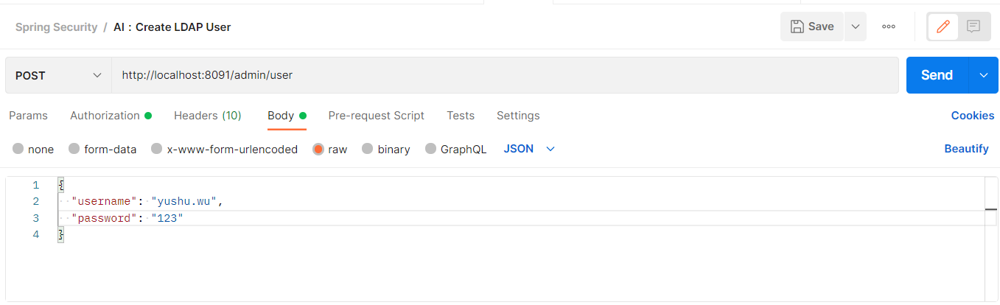
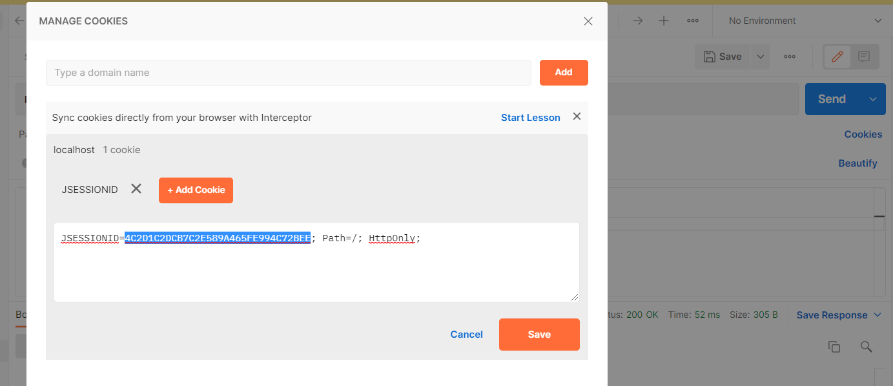
- 預設帳號只有 User 功能，所以用 yushu.wu 測試。
輸入 http://localhost:8090/user 會轉址到登入頁面(輸入yushu.wu/123)

成功後即會看到正確訊息 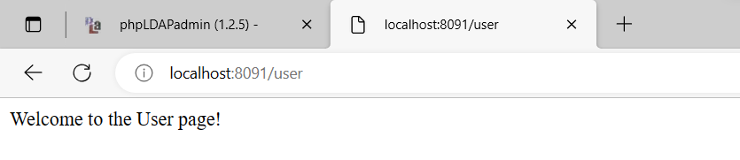
3.若接著輸入 http://localhost:8090/admin，則會因為權限問題回傳403錯誤。
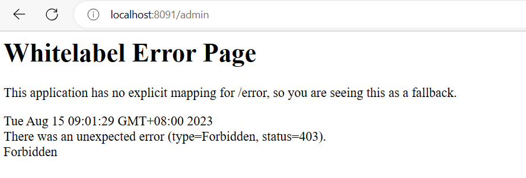
補充-客製403錯誤頁面

- SecurityConfig.java
import org.springframework.security.web.access.AccessDeniedHandler;
import com.example.exception.CustomAccessDeniedHandler;
...
@Override
protected void configure(HttpSecurity http) throws Exception {
http
.addFilterBefore(ldapAuthoriesFilter,BasicAuthenticationFilter.class).authorizeRequests()
.antMatchers("/admin/**").hasAnyRole("ADMIN")
.antMatchers("/user/**").hasAnyRole("ADMIN", "USER")
.anyRequest().authenticated()
.and()
.csrf().ignoringAntMatchers("/admin/user")
.and()
.formLogin()
.and()
.exceptionHandling().accessDeniedHandler(accessDeniedHandler())
.and()
.logout();
}
@Bean
public AccessDeniedHandler accessDeniedHandler() {
return new CustomAccessDeniedHandler();
}
...
CustomAccessDeniedHandler.java
import java.io.IOException;
import javax.servlet.ServletException;
import javax.servlet.http.HttpServletRequest;
import javax.servlet.http.HttpServletResponse;
import org.springframework.security.access.AccessDeniedException;
import org.springframework.security.web.access.AccessDeniedHandler;
import org.springframework.stereotype.Component;
@Component
public class CustomAccessDeniedHandler implements AccessDeniedHandler {
@Override
public void handle(HttpServletRequest request, HttpServletResponse response,
AccessDeniedException accessDeniedException) throws IOException, ServletException {
response.sendRedirect("/error-403"); // Redirect to the custom error page
}
}
HomeController.java
import org.springframework.stereotype.Controller;
import org.springframework.web.bind.annotation.RequestMapping;
@Controller
public class HomeController {
@RequestMapping("/error-403")
public String accessDenied() {
return "error/error-403";
}
}
error-403.html (路徑： src/main/resources/application.properties )
<!DOCTYPE html>
<html>
<head>
<title>403 Error - Access Denied</title>
<style>
body {
font-family: Arial, sans-serif;
background-color: #f8f8f8;
}
.container {
max-width: 400px;
margin: 0 auto;
padding: 20px;
background-color: #fff;
border: 1px solid #ddd;
border-radius: 5px;
box-shadow: 0 2px 4px rgba(0, 0, 0, 0.1);
}
h1 {
font-size: 24px;
color: #333;
margin-bottom: 20px;
}
p {
font-size: 16px;
color: #666;
margin-bottom: 20px;
}
a {
color: #007bff;
text-decoration: none;
}
a:hover {
text-decoration: underline;
}
</style>
</head>
<body>
<div class="container">
<h1>403 Error - Access Denied</h1>
<p>You are not authorized to access this page.</p>
<p>Please contact the administrator for assistance or go back to the <a href="/">home page</a>.</p>
</div>
</body>
</html>